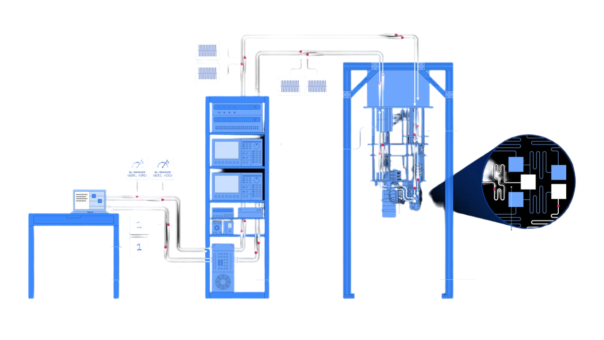
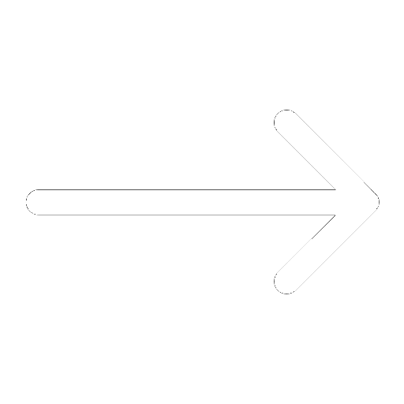
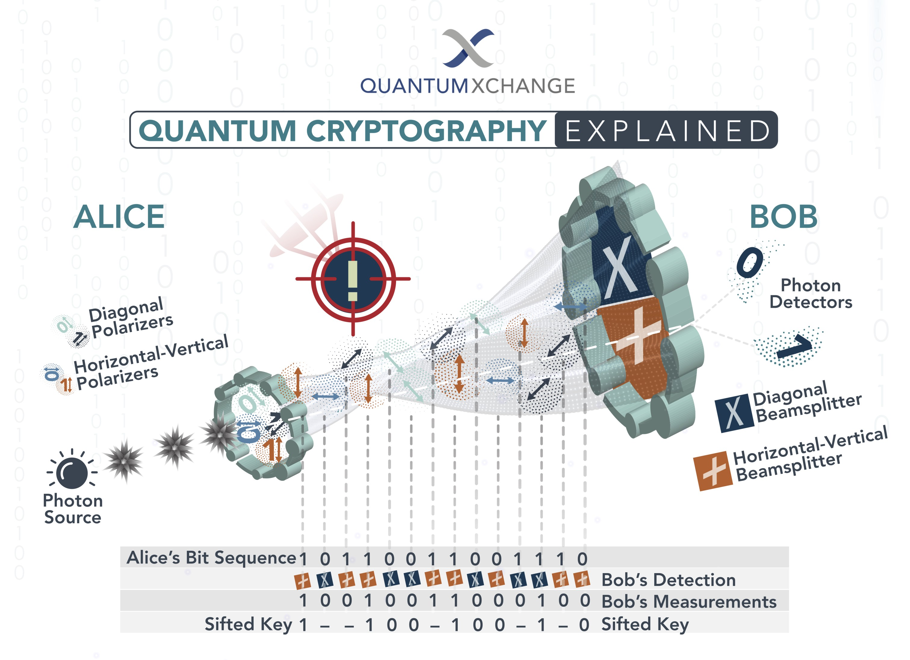

The Quantum Aftermath
What is Quantum Computing, and how will it affect modern day cryptography?

The first steps have already been made.
Companies such as IBM and Google have already made working prototypes of these devices.
Quantum speed ups may end certain forms of encryption.
Quantum Computers happen to specialize in certain operations that may render many current encryption algorithms useless.

Asymmetric Encryption
In asymmetric encryption, each user has their own unique public and private keys. These two keys are mathematically related such that data encrypted using the public key can only be decrypted using the private key, and vice versa.

Enables secure communication over the internet.
In order to send a secure message from one user to another, data is encrypted using the other user’s public key. This makes sure that the only other person who can decrypt this data is the other user.
This method can be improved even further by encrypting the data with the sender’s private key and receiver’s public key. This way, the receiver can make sure the message came from the sender, and the sender can make sure the receiver is the only party which can see the message’s contents.
10010101001010
1001001010
1100100
1001010010101
RSA encryption relies on prime numbers.
RSA is one of the most fundamental modern day asymmetric encryption algorithms. In order to generate public and private keys, two very large prime numbers are multiplied to find their product.
By factoring this huge product to find the two prime numbers, it is actually possible to derive a private key from a public key. However, this process is extremely time consuming, even using the best modern computers and algorithms.
300
Trillion
Years.
For a 2048 bit RSA key, an estimate says it would take 300 trillion years of computing time in order to break it with current day technology. However, this could change very soon.
How Does Quantum Computing Tie Into All Of This?
To answer this question, let us first dive into how they work. Qubits are the crux of quantum computers. Unlike regular bits, which can only hold either a value of 1 or 0, qubits can enter a state of superposition, where they are 0 and 1 at the same time. Qubits allow quantum computers to vastly speed up their calculations by being able to store multiple states at once. For example, 2 qubits would be able to store 4 states at once, and therefore essentially allow the quantum computer to do 4 calculations in one go.
Quantum computers are not supercomputers.
As powerful as these speedups may sound, quantum computers are not literally faster computers. The capabilities of near-future quantum computers are limited in that they are really only more efficient in certain operations, such as factoring. However, if you've been paying attention thus far, this could mean disaster for cryptography as we know it today.
The Problem
Quantum computers are able to very efficiently implement Shor’s algorithm, an algorithm for finding the prime factors of an integer. This directly threatens not just RSA, but the many asymmetric encryption algorithms today that rely on the fact that finding the prime factors of a very large semiprime is nigh-impossible. Worryingly, some of these algorithms are very much still in use.
The end of online security?
The same RSA-2048 algorithm that boasted a 300 trillion year breaking time on a classical computer would be steamrolled by a quantum computer with just 4099 stable qubits in around 10 seconds. Due to the prevalence of asymmetric encryption over the internet, hackers and other malicious parties would have unprecidented access to your sensitive online information.
Store now, decrypt later.
Perhaps the most worrying consequence of quantum computers is the possibility of a “store now decrypt later” attack. In anticipation of quantum computers strong enough to finally break encryption being created, some hackers have been storing vast amounts of encrypted data with the hopes that this data will still be valuable by the time they are able to decrypt it.
This issue is especially pressing because, even if all current encryption were to be made quantum-proof instantly, the data encrypted using quantum-unsafe algorithms stored by hackers could still be decrypted later and be valuable.
The Solutions
What can we do to mitigate this threat?
Up the security.
Some algorithms are actually already resistant to quantum computers, mainly symmetric encryption algorithms such as AES. While these are still impacted by quantum algorithms such as Grover’s algorithm, which reduces a brute force search from taking n steps to just sqrt(n) steps, solving this problem is quite straightforward.
With a 128 bit symmetric key, grover’s algorithm would effectively reduce it to having the same protection as a 64 bit key (from 2^128 brute force iterations to 2^64). Therefore, by doubling the 128 bit key to a 256 bit key, the 256 bit key would provide the same amount of protection against a quantum computer as a 128 bit key would provide against a classical computer.
Quantum Cryptography.
Alongside post-quantum cryptography, or using encryption algorithms that are resistant to quantum computers, another option is to use the very nature of quantum computing against itself. In quantum cryptography, polarized photons are sent through a fiber optic cable carrying data. If a malicious third party were to attempt to intercept these photons and observe them, the communicating parties would be notified since observing these photons would change their quantum states. The key passed along in this photon data stream could then be discarded.
